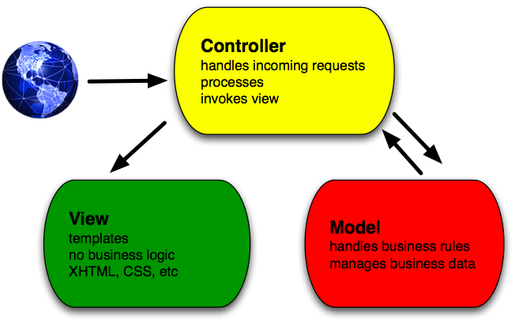
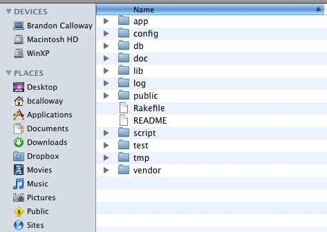

Intro to Ruby on Rails
Brandon Calloway
Contents
- Ruby Basics
- Ruby Data Structures
- Ruby Control Structures
- Hello Rails!
- Getting Started with Rails
- Rails Migrations
- Rails Models
- Rails View Layouts
- REST and Rails Routes
- Using Forms in Rails
- Associations
- Testing
- AJAX
- Your Rails Environment
- Using GitHub
- Deploying with Capistrano
- Resources
Ruby Basics
- Ruby originated in Japan during the mid-1990s
- Initially developed and designed by Yukihiro Matz Matsumoto
- Ruby is an Object Oriented Language
- Everything is an object
Ruby Objects
- Instance Variables
- Instance Methods
- Symbols
Instance Variables and Methods
class Songs
def index
@songs = Song.find(:all)
end
endindex is an instance method in Songs@songs is an instance variable in Songs
Symbols
- Used to name and identify things
- Means “the thing named xxx”
- Prefixed with a colon :
has_many :songs
Songs.find(:all)
Strings
- Double-quoted strings support interpolated Ruby code
- Single quoted strings display literal contents
puts 'Hello, Ruby!'
puts "It's now #{Time.now}!"
Class Methods in Rails
- Methods tied to class
- Perform class-level operations
class Song < ActiveRecord::Base end songs = Song.find(:all) bono = Artist.new(:name => "Bono")
Ruby Data Structures
- Similar to other languages such as PHP
- Shares same rules and operators as other languages
- Bonus: it’s all about the objects
Arrays
- Ordered collection of arbitrary objects
- Indexed by integers
arr = ["dog", "cat", "robot"]
arr[0] = dog
arr[1] = cat
Hashes
- Unordered collection indexed by artbitrary key
- Keys must be unique
- Keys and values can just about any object
animals = { "dog" => "canine", "cat" => "feline"}
puts animals["cat"] => “feline”
Ruby Control Structures
- Again, similar PHP
- if – else
- Loops
- Iterators
- Statement Modifiers
Conditional Statements
if song == "Britney Spears" rating = "LAME" elsif artist == "The Police" rating = "Awesome" else rating = "Most Awesome" end
Loops
while jukebox.song_count <= 100 # do awesome stuff end
for artist in @songs #do really awesome stuff end
Blocks and Iterators
- A block is a chunk of code attached to a method
- An iterator executes a set command for the specified duration
3.times { puts "Ho!"}
hash = { "dog" => "canine", "cat" => "feline"}
hash.each do |key, value|
puts "#{key} -> #{value}"
endHello Rails!
Rails Values
- Don’t Repeat Yourself (DRY)
- Convention Over Configuration (don’t reinvent the wheel)
- Productive
- Agile
Rails MVC Framework
- Full Stack, Baby!
- Fully Integrated and Seamless

Controller
The Controller is the “Traffic Cop”
http://localhost:3000/blogs/show/123
class BlogsController < ApplicationController
def show
@blog = Blog.find(params[:id])
end
endController – Action
The Controller is the “Traffic Cop”
http://localhost:3000/blogs/show/123
class BlogsController < ApplicationController
def show
@blog = Blog.find(params[:id])
end
endController – Parameter
The Controller is the “Traffic Cop”
http://localhost:3000/blogs/show/123
class BlogsController < ApplicationController
def show
@blog = Blog.find(params[:id])
end
endViews (Templates)
- html.erb (for HTML pages)
- js.rjs (for AJAX pages)
<% for blog in @blogs %>
<p>
<%=h blog.title %><br />
<%=h blog.body %>
</p>
<% end %>Models
- Handle business logic
- Gatekeeper to the data
class Blog < ActiveRecord::Base has_many :comments validates_presence_of :title validates_presence_of :body end
Getting Started with Rails
- Take Baby Steps in Iterations
- Naming Conventions
Model → Singular (Blog)
Controller → Plural (Blogs)
DB Table → Plural (blogs)
Try it in script/console:
"song".pluralize
- Using Git
ruby script/generate -g controller songs
The Rails Landscape
rails -d mysql myproject

Gems
- Gems are packaged Ruby “add-ons”
gem install rails - Gems contain documentation
gem server→ http://localhost:8808
Script Console
- Interactive Rails
- Can handle any Rails operation
- VERY useful development tool
- Useful for interacting with model/controller
ruby script/console
Script Server
- Starts WEBrick server and Mongrels
- Useful for debugging
- Built into Rails
- No need for Apache server
ruby script/server
Scaffolding
- Quickly gets an app up and running
- Automagically sets up CRUD operations
- Scaffolding is EVIL
ruby script/generate scaffold blog title:string body:text
rake db:migrate
View all available rake commands (Rake is the Ruby version of Make)
rake -T
Scaffold Actions for Blogs
index → list all blogs
show → show one blog’s details
new → show a form for creating a new blog
create → insert a new blog into the database
edit → show a form for editing a blog
update → update the blog in the database
destroy → deletes a blog from the database
Rails Helpers
There are many helpers built-in to Rails
number_to_currency(185) → $185.00
number_to_phone(8889878474) → 888-987-8474
Custom Helpers
- Help keep your projects DRY
- Code is automagically included into views
<%= price(song.price) %>
module SongsHelper
def price(value)
value == 0 ? "FREE!" :
number_to_currency(value)
end
endPartials
- Help keep your projects DRY
- Similar to PHP includes
Save contextual navigation as a partial in the /view/blogs directory
_blog_nav.html.erb
Display the navigation in the songs view
<%= render :partial => 'blog_nav' %>
Rails Migrations
- Used to modify the database schema
- Version control for your database schema
- Database independent
- Repeatable
Generating a Migration
Generate the migration
script/generate migration add_blog_id_column_to_comments blog_id:string
Edit the migration file if necessary
db/migrate/XXXXXXXXXX_add_blog_id_column_to_comments.rb
If the proper naming convention is used, it is unnecessary to edit the migration before running
Run the migration
rake db:migrate
Migrating Up and Down
Accesses the self.up method to migrate up
rake db:migrate
Accesses the self.down method to migrate down and revert the migration
rake db:migrate VERSION=XXXXXXXXXX
More options available:
rake -T
Rails Models
- Model is the gatekeeper to enterprise data
- Validation are business rules in model
Validations
class Song < ActiveRecord::Base
validates_presence_of :title
validates_numericality_of :duration
validates_format_of :duration,
:with => /\d\d:\d\d:\d\d/
endDefault Finder Methods
- show method returns all blogs that match :id
- Rails usually puts these simple methods in the controller
class BlogsController < ApplicationController
def show
@blog = Blog.find(params[:id])
end
endCustom Finder Methods
- Perform more complex business operations
- These methods are best stored in the model
- Keep controller clean, place business login in Model
class Blog < ActiveRecord::Base
def self.find_future_blogs
find(:all,
:order => "updated_at",
:conditions => ['updated_at >= ?', Time.now])
end
endModel Finder Methods
find(:first, criteria)
Finds first row matching criteria
find(:last, criteria)
Finds last row matching criteria
find(:all, criteria)
Finds all rows matching criteria
Example Model Finders
blog = Blog.find(123)
Finds the blog with id of 123
blog = Blog.find_by_title("My Blog")
Finds the blog named “My Blog”
SQL Operations
blog = Blog.find(:all, :order => "title asc")
Find all blogs, order by title ascending
blog = Blog.find(:all, :order => "created_at", :limit => 5)
Find all blogs, order by timestamp and only show the first 5
Rails View Layouts
- Layouts live in
app/views/layouts application.html.erbis the main application layoutblogs.html.erbis the layout for the blogs controller- If Rails cannot find a controller layout, it will default to
application.html.erb
Layout File
ERB Tags used for inline Ruby code
This produces inline html from Ruby
<%= %>
This encapsulated plain old Ruby code
<% %>
Action output from a Controller will go here:
<%= yield %>
Flash
Not to be confused with Adobe Flash
Rails produces messages using flash
<%= flash[:notice] %>
Flash can be declared in a method defined in the Model
flash[:notice] = "Your blog was successfully updated"
REST and Rails Routes
- Representational state transfer (REST)
- Outlines how resources are defined and addressed
Show all routes
rake routes
Default Route
http://localhost:3000/blogs/show/123
blogsis the controllershowis the action123is the id of the blog entry
Custom Routes
ActionController::Routing::Routes.draw do |map| map.resources :comments map.resources :blogs map.connect 'newblog', :controller => 'blogs', :action => 'new' map.root :controller => 'blogs' map.connect ':controller/:action/:id' map.connect ':controller/:action/:id.:format' end
RESTful URLs
Browsers are dumb, they can only do a few operations:
GET http://localhost:3000/blogs/123
POST http://localhost:3000/blogs
PUT http://localhost:3000/blogs/123
DELETE http://localhost:3000/blogs/123
Rails to the Rescue
| SQL | HTTP | AR | Action | |
| Create | INSERT | POST | create | create |
| Read | SELECT | GET | find | show |
| Update | UPDATE | PUT | update | update |
| Destroy | DELETE | DELETE | destroy | destroy |
RESTful create
<% form_for @blog do |f| -%> Title: <%= f.text_field :title %> Body: <%= f.text_area :body %> <%= form.submit 'Create' %> <% end -%>
def create @blog = Blog.create(params[:blog]) end
RESTful show
<%= link_to blog.title, blog_path(@blog) %>class BlogsController < ApplicationController
def show
@blog = Blog.find(params[:id])
end
endRESTful update
<% form_for @blog do |f| -%> <%= f.text_field :title %> <%= f.text_area :body %> <%= form.submit 'Update' %> <% end -%>
def update @blog = Blog.find(params[:id]) @blog.upate_attributes(params[:event]) end
RESTful destroy
<%= button_to("Delete", blog_url(@blog), :method => :delete) %>
def destroy @blog = Blog.find(params[:id]) @blog.destroy end
Using Forms in Rails
Linking to an Action
<%= link_to "Add New Blog", new_blog_path %>
class BlogsController < ApplicationController
def new
@blog = Blog.new
end
endActive Record Model Forms
<% form_for @blog do |f| -%> Title: <%= f.text_field :title %> Body: <%= f.text_area :body %> <%= form.submit 'Create' %> <% end -%>
<form action="/blogs" class="new_blog" id="new_blog" method="post">
Title: <input id="blog_title" name="blog[title]" size="30" type="text" />
Body: <textarea cols="40" id="blog_body" name="blog[body]" rows="20"></textarea>
<input id="blog_submit" name="commit" type="submit" value="Create" />
</form>
Handling a Form Submit
params => {
:blog =>
{:title => "My First Blog",
:body => "blah blah blah"
},
:commit => "Create",
:action => "create",
:controller => "blogs"
}
Passing the Params to the Controller
class BlogsController < ApplicationController
def create
@blog = Blog.new(params[:blog])
respond_to do |format|
if @blog.save
flash[:notice] = 'Blog was successfully created.'
format.html { redirect_to(@blog) }
else
format.html { render :action => "new" }
end
end
end
Associations
- Relational database
- Foreign Keys to link table data
- One-to-Many
- Many-to-Many
One-to-Many Association
Let’s create Comments for each Blog
One-to-Many Relationship
One-to-Many Migration
class AddBlogIdColumnToComments < ActiveRecord::Migration
def self.up
add_column :comments, :blog_id, :integer
end
def self.down
remove_column :comments, :blog_id
end
endUpdating the Controller
<%= link_to "Comment!", new_comment_path(:blog_id => blog.id) %>
def new
@blog = Blog.find(params[:blog_id])
@comment = Comment.new
respond_to do |format|
format.html # new.html.erb
format.xml { render :xml => @comment }
end
end
Updating the Form
- Simply add a hidden field to the form
- Passes the blog_id to the comment controller
- blog_id is inserted into the comments table via the create method
<%= hidden_field_tag :blog_id, @blog.id) %>
Adding Comments to blogs
def create
@blog = Blog.find(params[:blog_id])
@comment = @blog.comments.build(params[:comment])
respond_to do |format|
if @comment.save
flash[:notice] = 'Comment was successfully created.'
format.html { redirect_to(@comment) }
else
format.html { render :action => "new" }
end
end
end
Testing
- Testing in development is cheaper than testing in production
- Error-driven testing sucks! Error-driven testing = Jode
- Test and test often
- Unit Tests → testing on the model
- Functional Tests → testing on the controller
- Third party testing frameworks (RSpec, Shoulda)
- Rcov test coverage gem, http://eigenclass.org/hiki.rb?rcov

Basic Unit Testing
- If you do any one test, test your Unit
- Go ahead and laugh, cause “test your unit” is funny
Run all unit tests:
rake test:units
Basic Unit Testing
- If you do any one test, test your Unit
- Go ahead and laugh, cause “test your unit” is funny
THAT’S WHAT SHE SAID
Run all unit tests:
rake test:units
Custom Finder Test
This checks to see if the recent_blogs method works as intended
def test_recent
Blog.delete_all
b= Blog.new(:title => "My Test blog",
:body => "blah blah",
:created_at => "2008-05-10 17:31:51",
:updated_at => "2008-05-10 17:31:51")
assert b.save, b.errors.full_messages
assert_equal(1, Blog.recent_blogs.size)
endBasic Functional Testing
Simulates HTTP GET Request
def test_should_get_index get :index assert_response :success assert_not_nil assigns(:blogs) end
Run all functional tests:
rake test:functionals
Test Fixtures
A fixture is YAML file that contains sample data to use for testing
one: title: My First Blog body: blah blah blah two: title: My Cool Blog body: blah blah blah
To use, place this at the top of your *_test.rb file: fixtures :blogs.yml
AJAX
- Rails defaults to Prototype, Scriptaculous
- jRails jQuery drop-in replacement
- Get it working without AJAX first!
- Take baby steps in your AJAX iteration
<%= javascript_include_tag :defaults, :cache => :true %>
Functional Use of AJAX
- Notification
- Add, Edit, Delete without a browser refresh
- Dynamic page updates
- Drag-and-Drop
AJAX should have a purpose, not “just because you can”.
Simple Example:
<%= link_to_function ("Posts", "Element.toggle('list')") %>
Your Rails Environment
- Development
- Staging
- Production
- Know your Rails environment, deploy wisely
- Conflicts between Rails version, Ruby version, and Gems
Development Environment
- Default Rails environment “out-of-the-box”
- No caching
- Class reloading
- Verbose logging for debugging
RAILS_ENV=development
Production Environment
- Caching for optimization
- No class reloading
- Minimal logging
- Friendly error pages
Dreamhost runs in Production Mode by default since it runs Passenger (mod_rails)
RAILS_ENV=production
Ruby on Rails Servers
Mongrel
- Ruby/C webserver
- Tested and Proven
- Installed as a gem, extensible with gem plugin
Passenger (mod_rails)
- The new kid on the block
- Easier to setup than a Mongrel cluster
- Works similar to PHP with Apache
Using GitHub
- GitHub is our SCM of record
- The codebase on GitHub should always be the latest copy
To checkout a copy from GitHub
git clone git@github.com:scullygroup/PROJECTNAME.gitTo update your existing git copy from the GitHub repo
git pullTo commit your changes back to the repo
git pushRails and Git
You can automatically add any code produced from a script/generate task
ruby script/generate -g scaffold blog title:string body:text
Commit small incremental changes locally
git add .
git commit -m "I added a really awesome feature"
Push changes to repo when you hit a milestone
git push
This batch pushes all commits you have made locally since your last push to the repo
Deploying with Capistrano
- One-step deploy
- Exports code from SVN or GIT
- Maintains releases in the web directory
- If your app blows up, simply roll it back
- You can add your own special tasks to the deploy script
- You can deploy your app, web, and db to one server or different servers with the SAME SINGLE COMMAND
cap deploy
Getting Started With Capistrano
Install as a gem
gem install capistrano
Initialize your project
capify .
Edit your deploy.rb file in the /config directory
Setup the remote server, then perform a cold deploy
cap deploy:setup
cap deploy:cold
Let ’er rip!
cap deploy
Resources
Rails Websites
Ruby on Rails, http://www.rubyonrails.org/
API
http://www.railsbrain.com/
http://www.rubybrain.com/
Blogs
Giant Robots, http://giantrobots.thoughtbot.com/
Ruby on Rails, http://weblog.rubyonrails.org/
Pragmatic Programmers, http://www.pragprog.com/
Podcasts
Learning Rails, http://www.buildingwebapps.com/course
Rails Envy, http://www.railsenvy.com/
Rails Podcasts, http://podcast.rubyonrails.com/
Cheatsheets, Tutorials
http://peepcode.com/
http://dizzy.co.uk/cheatsheets